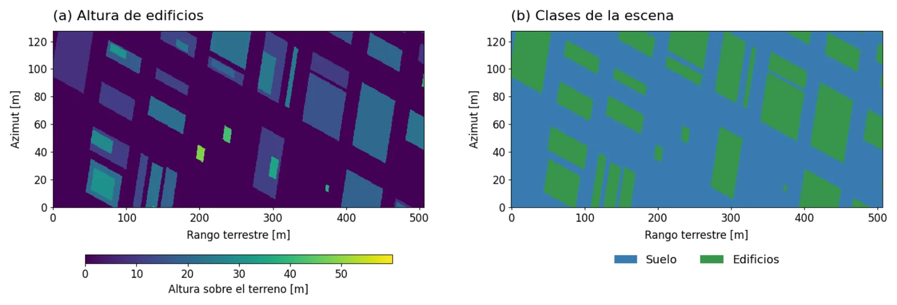
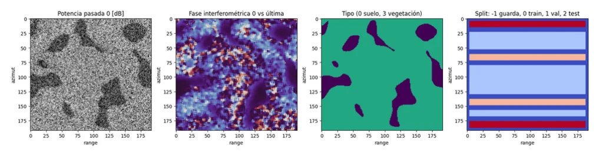
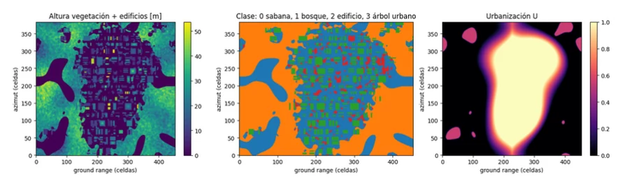

SAR tomography with half the acquisitions
Every extra radar pass over a scene costs time and money. This project asks how much of a tomographic reconstruction survives when a network sees 4 passes instead of 8, if it is first taught by a network that saw all of them.
- Period
- August 2026 to present
- Group
- Dr. Edgar Salazar (advisor), UPB with Universidad Católica Boliviana
- My part
- Synthetic datasets, classical baselines, unrolled network and distillation
- Status
- Preliminary results on synthetic data; poster (second author)
The problem: every pass counts
SAR tomography (TomoSAR) estimates how radar backscatter is distributed in height. It does so by combining several complex acquisitions of the same scene taken from slightly different positions. How many passes there are, and how they are spaced, sets what can be resolved: with fewer observations the ambiguities grow and contributions at different heights become harder to separate.
Cities make this harder. The ground, a roof and a facade can all fall in the same radar cell, an effect called layover, and the reconstruction has to pull them apart. Because those contributions are few and well localized in height, sparse reconstruction and model-based learning are natural tools.
The question here is practical: can urban height profiles be reconstructed from fewer acquisitions without losing the layers that matter?
Deep unrolling: from the solver to the network
The network estimates a non-negative power profile over height from the covariance of the observations. The covariance is modeled as
C ≈ A diag(p) AH + σ2I, with Anℓ = exp(−j kz,n zℓ)
where p is the power at each height, A encodes the acquisition geometry and σ2 is the noise level. Instead of iterating a sparse solver hundreds of times, the solver is unrolled into ten stages inspired by FISTA. Each stage keeps the physical update, a sparsity threshold and a learned momentum, and adds a learned correction from a small one-dimensional U-Net that is shared between stages and guided by the point-spread function.
Because the acquisition geometry defines the reconstruction operator, the same architecture runs with 8 or with 4 acquisitions. The model assumes that contributions at different heights are uncorrelated.
Knowledge distillation: 8 acquisitions teach 4
A teacher network is trained with all 8 acquisitions and then frozen. Its weights initialize a student of the same architecture, which only receives 4 of the 8. The student is trained to reproduce the teacher's final profile and also its intermediate profiles, stage by stage.
The student's loss combines four terms:
LS = Lout + 0.5 Lstages + 0.3 Lref + 0.1 Lphys
The output and stage terms compare the student with the teacher. The reference term supervises with the known synthetic profile, and the physics term penalizes the residual of the covariance model. At inference the student uses 4 acquisitions and the teacher is no longer needed.
Synthetic data with known ground truth
Training a network like this needs the true height profile of every pixel, which real campaigns rarely provide. I built three synthetic scenarios, urban, forest–savanna and mixed, each with complex observations, an acquisition geometry and reference profiles. Ground, noise and geometry parameters are based on the UAVSAR Lopé data.
In the urban scenario every scatterer contributes a complex amplitude set by its power and phase, and the simulation includes radar projection, shadow, noise and phase errors. The results below use this scenario: 100 scenes of 160 by 160 single-look complex pixels, split 80/10/10 into training, validation and test, which gives 24,000, 4,653 and 4,615 profiles once shadowed pixels are excluded. The height axis spans −20 to 60 m in 64 bins, and covariances are estimated over a 5 by 5 window.






Preliminary results
Teacher and student were evaluated on the 4,615 profiles of the ten urban test scenes and compared with classical ISTA using the same number of acquisitions, 300 iterations and a regularization weight chosen on the validation set. The metric is the mean Wasserstein-1 distance to the reference profile, in meters: how far, on average, the reconstructed power has to move in height to match the truth.
| Pixel type | ISTA, 8 | Teacher, 8 | ISTA, 4 | Student, 4 |
|---|---|---|---|---|
| Ground | 0.72 | 0.46 | 1.01 | 0.68 |
| Roof | 1.02 | 0.80 | 1.35 | 1.05 |
| Layover | 3.30 | 2.02 | 4.08 | 2.71 |
With 4 acquisitions the student beats ISTA on all three pixel types. In layover, the hardest case, the error falls by 34%, from 4.08 m to 2.71 m, and the share of layers recovered rises from 72% to 86%. The student with 4 acquisitions also does better in layover than ISTA does with 8.
Two caveats belong next to those numbers. Ghost power outside the support of the reference rises from 0.4% to 1.7%, so the student invents a little structure that is not there. And the teacher with 8 acquisitions remains the best on every pixel type: distillation recovers part of what the missing passes carried, not all of it.

Limits and next steps
- Everything so far is synthetic. The backscatter assigned to roofs and facades is a modeling assumption without numerical validation, and the physical model is simplified.
- With a large vertical wavenumber, some 4-pass scenes are ambiguous by construction, because sidelobes fall inside the height grid.
- Next: evaluation on real data, a smaller student network, and metrics reported per scene.
What I did
- Built the synthetic TomoSAR datasets (urban, forest–savanna and mixed) with known ground truth, using parameters based on UAVSAR Lopé.
- Implemented the classical baselines: beamforming, Capon and ISTA/FISTA.
- Implemented the deep-unrolled network and trained it with knowledge distillation from an 8-acquisition teacher to a 4-acquisition student.
- Presented the poster, as second author, at the Escuela de Primavera en Deep Learning 2026.
Poster
Back toAll research
Other projectA low-cost SDR testbed for 26 GHz 5G hardware